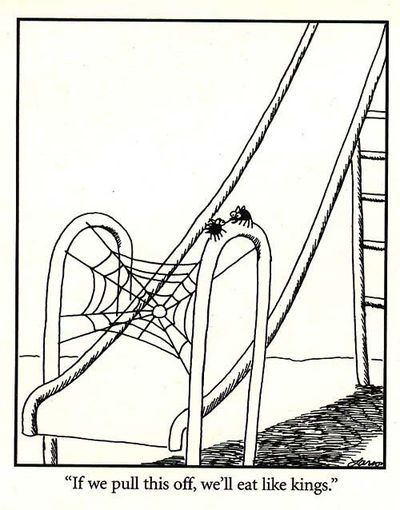

We are a small, independent research group working on fundamental AI research.
Research priorities
- Main priority: Investigate o-style systems (post-training, system2 reasoning)
- Secondary priorities:
- Wrap up ARC-related research: test-time training and compute trends
- Learn to train and fine-tune LLMs, and develop the knowhow and infrastructure for o-style post training
Strategy
- Funding is secured for at least the next 3 years.
- Within that timeframe, get good results on o-style reasoning systems
- This should open new financing and recruiting opportunities. (hopefully elevating the lab from GPU-poor to GPU-middle-class to GPU-rich)
- Move on to more challenging benchmarks
Values
Intellectual curiosity, high intrinsic motivation (obsession), perseverance. Fast experimentation process
We are driven primarily by the desire to reverse engineer intelligence and build machines according to those principles.
Regarding AI safety: we believe that after reaching a certain level of capability, AI safety will become a critical issue and is likely to constitute an existential threat. But first we want to carry out the capability research and re-assess as we go. We will have a process where AI safety can be made the top priority.
